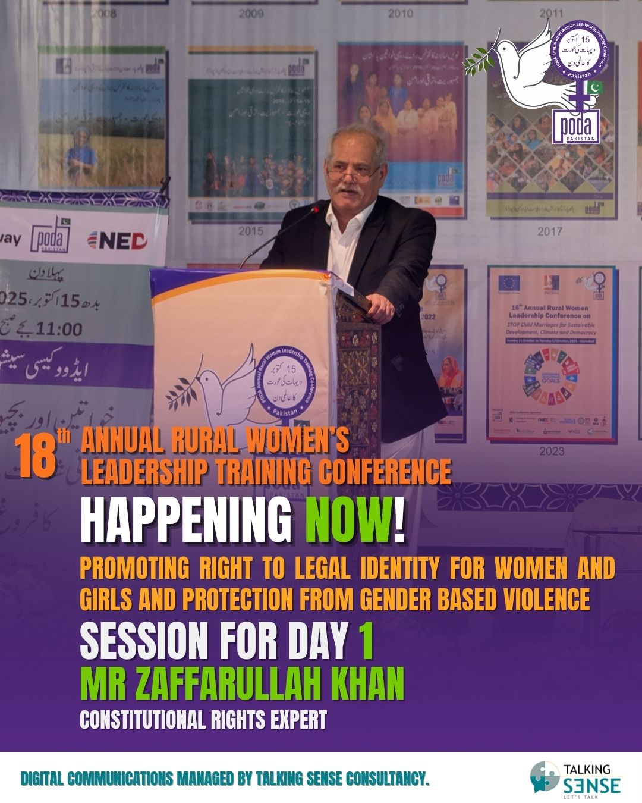

Conference 2025 Booklet & Resolution
Solutions, strategies & resolutions adopted at the 18th Annual Rural Women Leadership Training Conference, held 15–17 October 2025 in Islamabad.
Read MorePODA's flagship gathering of rural women leaders from across Pakistan, now in its 18th year — producing policy resolutions on climate justice, civic participation and legal identity rights.

Held every year in Islamabad, the Annual Rural Women Leadership Training Conference brings together rural women leaders, policymakers and civil society to develop practical resolutions on the issues affecting their communities. The 18th edition, held 15–17 October 2025, drew more than 1,500 rural women leaders from 100 districts to shape recommendations on climate justice, civic participation and legal identity rights.
Solutions, strategies & resolutions adopted at the 18th Annual Rural Women Leadership Training Conference, held 15–17 October 2025 in Islamabad.
Read More
Constitutional rights expert Zafarullah Khan highlighted the power of legal identity as the foundation of equality and citizenship at the conference's Solution Strategies Development Session.
Read More